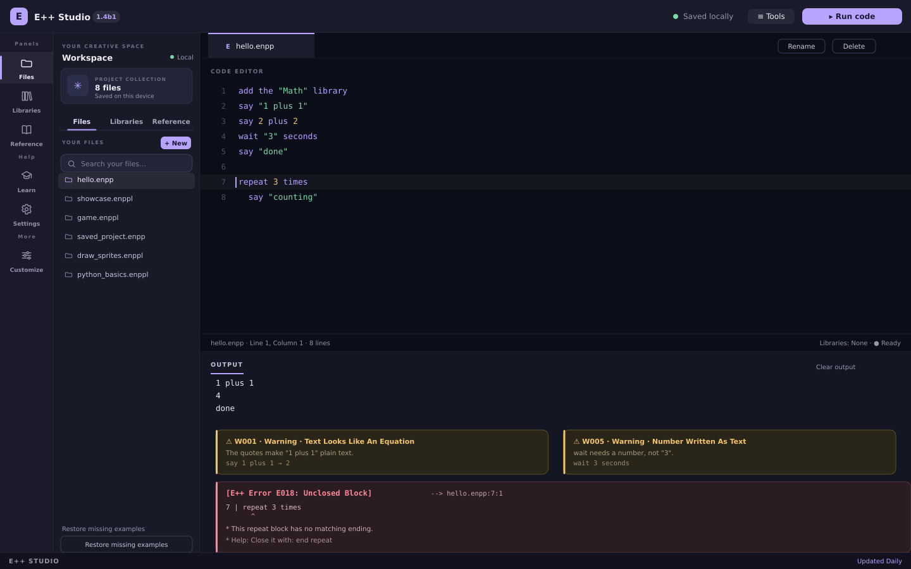
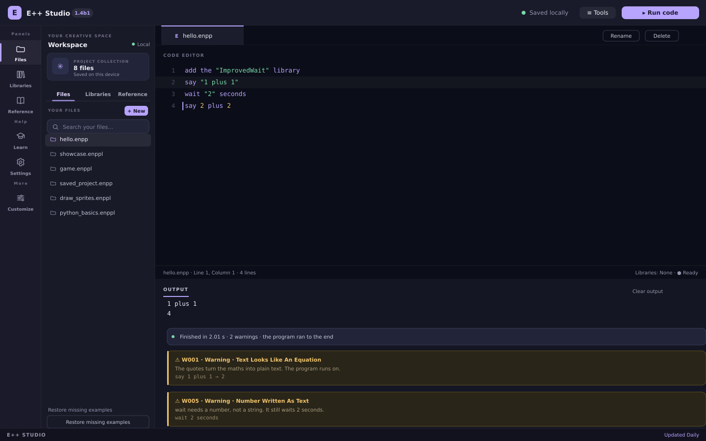
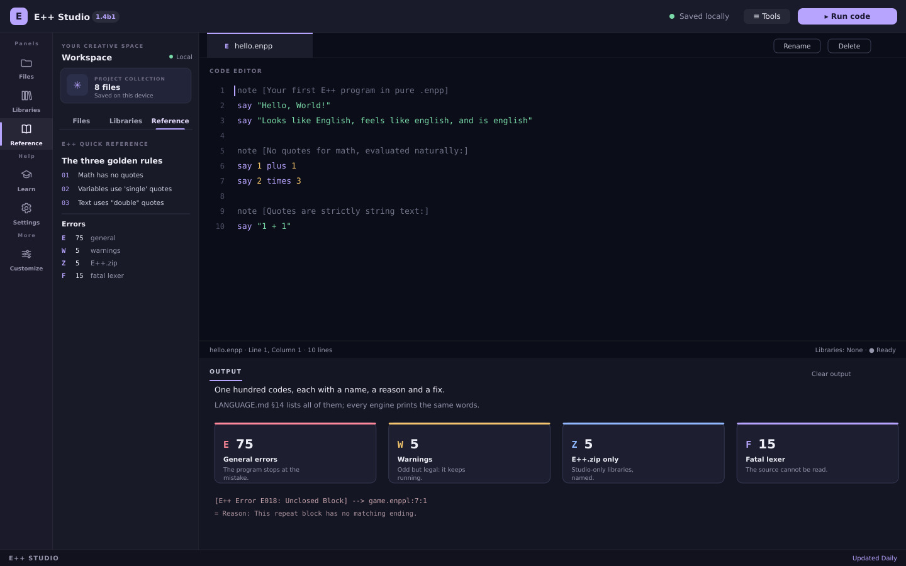
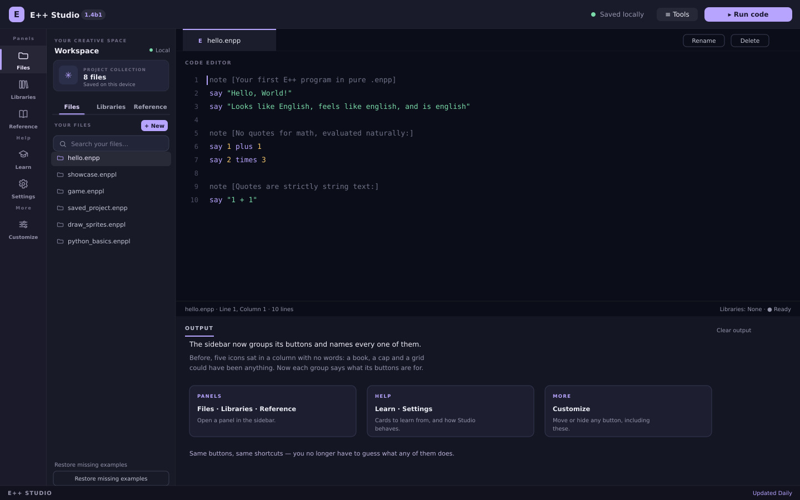
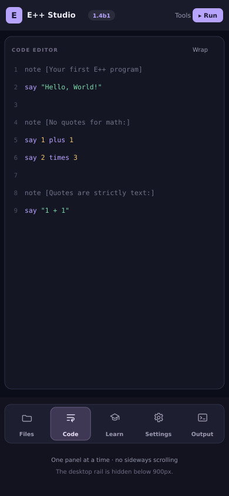

E++ 1.4b1 is the error overhaul. Every message the language can print now has a permanent code, a plain-English name and a fix — one hundred of them, counted and documented.
✦ RELEASE 1.4b1ERROR OVERHAUL

A warning that lets you work, and an error that tells you exactly what to fix.
01 / THE COUNTS
75 · 5 · 5 · 15.
Seventy-five general errors (E001-E075) stop the program where the mistake is. Five warnings (W001-W005) never do. Five Z codes (Z001-Z005) can only happen inside E++.zip. Fifteen fatal lexer errors (F001-F015) mean the source could not be read at all.
02 / WARNINGS THAT LET YOU WORK
"1 plus 1" still prints.
An equation written inside double quotes is W001: E++ tells you the quotes are doing nothing, then prints exactly what you asked for. A library you add and never use is W003. A number written as text is W005.
03 / A CLEARER SIDEBAR
Every button says what it is.
The activity bar was five icons with no words: a book, a cap and a grid. It is now grouped into Panels, Help and More, and every button carries its name — Files, Libraries, Reference, Learn, Settings and Customize. Nothing moved.
04 / SMALL SCREENS
Built for a phone again.
Every phone rule in Studio's stylesheet sat inside a media query that could never match, so narrow screens were served the desktop shell. They now apply below 900px: one panel at a time, no sideways scrolling, and a bottom bar with Files, Code, Learn, Settings and Output.

Warnings arrive as the program runs — and it still reaches the end.

The whole catalogue, counted and documented: 75 · 5 · 5 · 15.

The sidebar is clearer too: every button is grouped and named.

On a phone: one panel at a time, and five buttons that say what they do.
THE SHAPE OF A MESSAGE
Name, place, reason, fix.
Every failure reads the same way in the Studio, the C++ command line and the Python engine: the code and its name, the file, line and column, the line itself with a caret, a reason, and the help that gets you unstuck. The whole catalogue is in LANGUAGE.md §14, and node tests/errors-1.4b1.mjs proves the split.
[E++ Error E018: Unclosed Block]
--> game.eppl:7:1
|
| repeat 3 times
| ^
= Reason: This repeat block has no matching ending.
= Help: Close the block with its own ending,
for example: end repeat
THE LATEST FROM E++ STUDIO
A little more life in Studio.
E++ 1.4a3 brought a little movement to your workspace, plus thoughtful improvements that make creating feel smoother.
✦ RELEASE 1.4a3STUDIO UPDATE
Your workspace, with a little more life.
01 / IN MOTION
Small details, smoother moments.
Menus, panels, dialogs and controls now move gently as you work. Prefer things still? Turn Studio animations off in Settings. Your system’s reduced-motion preference is always respected.
02 / YOUR SPACE
More control, less fuss.
Reset your appearance without changing your files or layout. Keyboard focus stays where you need it when choosing colors and arranging launchers.
Your Studio, your pace. Find the new motion controls in Settings.Tools brings your features and projects together.
ALSO IN THIS UPDATE
Tools, supercharged.
Open Tools with Ctrl+Shift+P to browse your features and projects. Customize which shortcuts appear in Tools and the sidebar. The explorer sorts files naturally, searches show a helpful empty state, and notifications stay visible for their full duration. EShare, presets and your existing projects are still right where you left them.
E++ 1.4a2 is here, with more ways to make your workspace your own. A little more you, a lot more room to create.
✦ RELEASE 1.4a2STUDIO UPDATE
The Studio workspace, ready to make yours.Edit Studio: arrange your launchers or choose a preset.
01 / YOUR WORKSPACE
A Studio that moves with you.
Open Settings → Edit Studio to drag launcher shortcuts between the activity bar and top bar. Remove what you don’t need, bring it back later, or start from a preset. Your editor, output and Tools always stay put.
02 / YOUR COLORS
Find your color.
Pick from a whole palette of colors, or create a custom accent. Fine-tune your editor with text size, line numbers and line wrapping. Your choices are saved on this device.
Color, editor options and Edit Studio, together in Settings.
ALSO IN THIS UPDATE
A tidier Tools menu.
EShare now has one home in Tools. Automatic library file renaming remains on by default, and the news is always one click away.